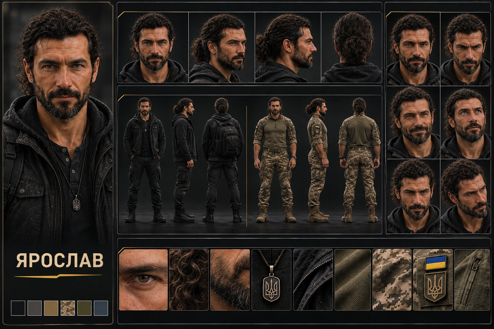

ОСНОВНА ІНФОРМАЦІЯ
Заступник Дмитра
До знайомства зі світом характерників Ярослав працював у команді Дмитра та був його заступником. У рукописі він описаний як високий, широкоплечий чоловік із темним волоссям, зібраним у короткий хвіст, та уважним, трохи хижим поглядом.
Ярослав довіряв Дмитрові й без вагань погодився піти з ним. Дізнавшись про характерників, він став новонародженим характерником — розгубленим і схвильованим, ще нетренованим, але сповненим потенціалу.
Ім’я: Ярослав
Роль до ініціації: заступник Дмитра
Статус: новонароджений характерник
Підготовка: на початку шляху, ще нетренований
Зовнішність: високий, широкоплечий; темне волосся зібране у короткий хвіст
Особливість: значний потенціал, який ще належить розкрити
ІНІЦІАЦІЯ
Довіра до Дмитра
Коли Дмитро повертається до офісу, він розповідає Ярославові про новий світ і показує йому свої напрацювання. Під час розмови Дмитро перевіряє, чи здатен Ярослав сприймати мисленнєве спілкування, і розуміє, що той також належить до характерників.
Ярослав спершу не помічає незвичного способу спілкування. Коли Дмитро пояснює, що говорить із ним подумки, Ярослав реагує здивуванням і недовірою. Дмитро поступово передає йому необхідну інформацію та пропонує перевірити інших членів команди.
ПОШУК У ЄВРОПІ
Перші самостійні завдання
Після навчання Ярослав долучається до пошуку латентних характерників. Він працює в Європі й перевіряє людей за допомогою мислезв’язку — обережно, без тиску та різких імпульсів, намагаючись відчути характерний відгук.
У Празі за два дні пошуків він не знаходить жодного відгуку. Через мислезв’язок надходять короткі повідомлення від інших характерників, яких Дмитро відправив до Варшави, Берліна, Парижа та Відня. На той момент результати пошуків у цих містах також невтішні: латентних характерників не виявлено.
РОЛЬ У СЮЖЕТІ
Новий учасник команди
Ярослав переходить від звичної роботи заступника Дмитра до нового для себе завдання — пошуку людей, у яких прихований дар характерника. Його історія показує перші кроки новонародженого характерника: від здивування після ініціації до практичного застосування мислезв’язку.
Точний вік, родина та подальший перелік здібностей Ярослава в опрацьованих фрагментах не встановлені, тому ці характеристики тут не додаються.